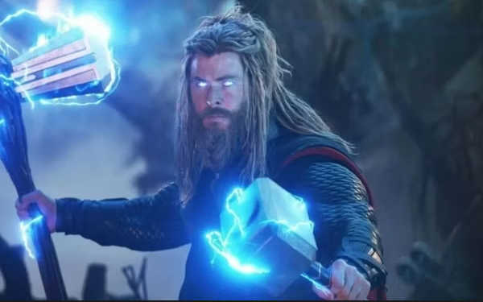

"The Measure of a Person, of a Hero, Is How Well They Succeed at Being Who They Are."
Endgame had a strong theme of the surviving Avengers being true to who they really were, the people under the colorful costumes, and Frigga knew it. Just the way Tony Stark showed his true self by giving his life for the final Snap, Frigga told her son that Thor had to succeed at being who he really was, not try in vain to be some perfect version of him that didn't even exist. That helped Thor find some much-needed inner peace, and that got him ready for his future adventures in Thor: Love and Thunder.

"I'm Still Worthy!"
Thor sank into a deep depression after the loss of so many Asgardians and his brother Loki against Thanos, and all seemed lost. Then, he was motivated to fight one last battle, and when he revisited Asgard's past and got Mjölnir, he was overjoyed to realize he was still worthy. The hammer wordlessly told him so, and most importantly, Thor told himself so, too.